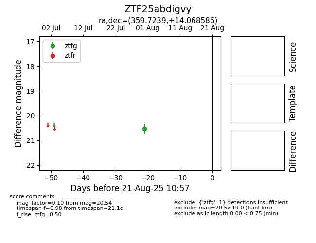

Target ZTF25abdigvy at 2025-08-21 10:57, see:
FINK: fink-portal.org/ZTF25abdigvy
Lasair: lasair-ztf.lsst.ac.uk/objects/ZTF25abdigvy
ALeRCE: alerce.online/object/ZTF25abdigvy
alt names
ZTF25abdigvy (ztf,alerce)
coordinates:
equatorial (ra, dec) = (359.7239,+14.06859)
galactic (l, b) = (104.1195,-46.87494)
photometry
last ztfg=20.54
1 ztfg detections
